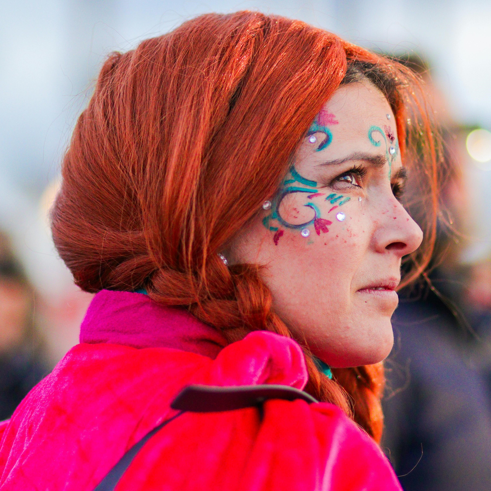
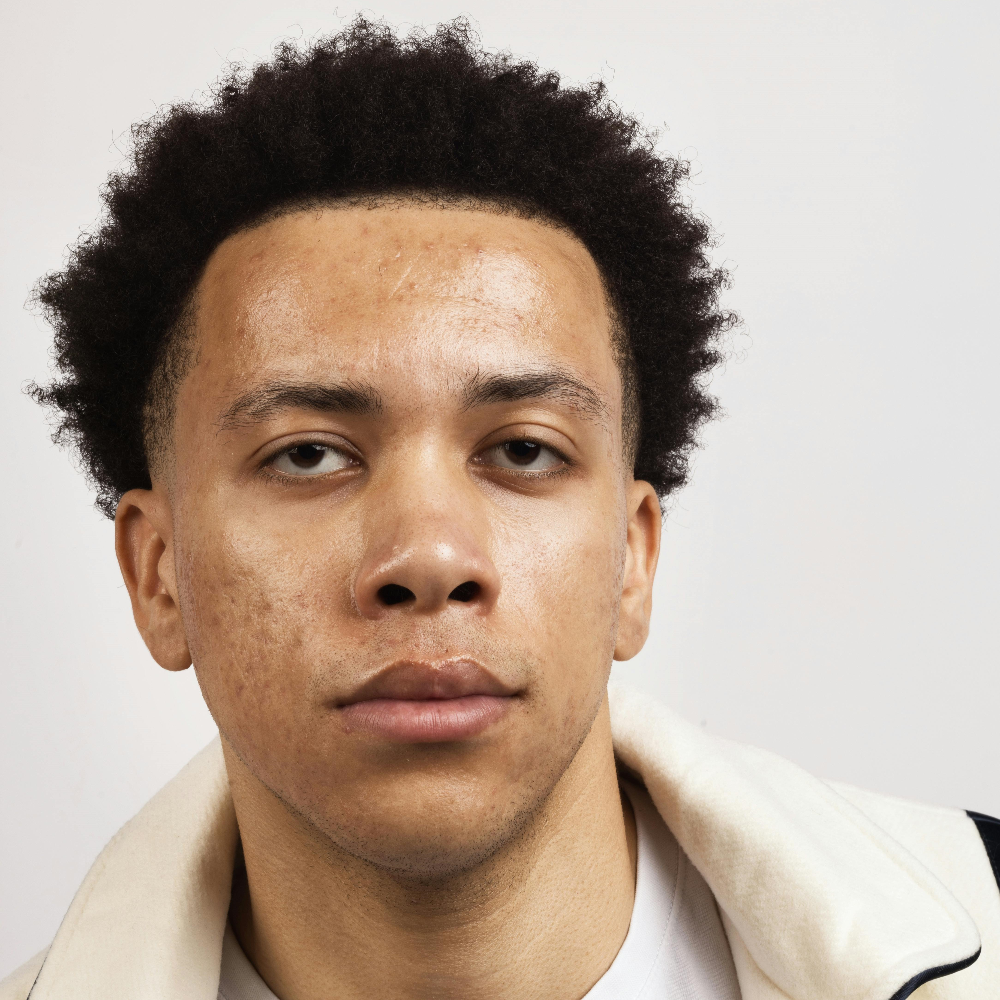
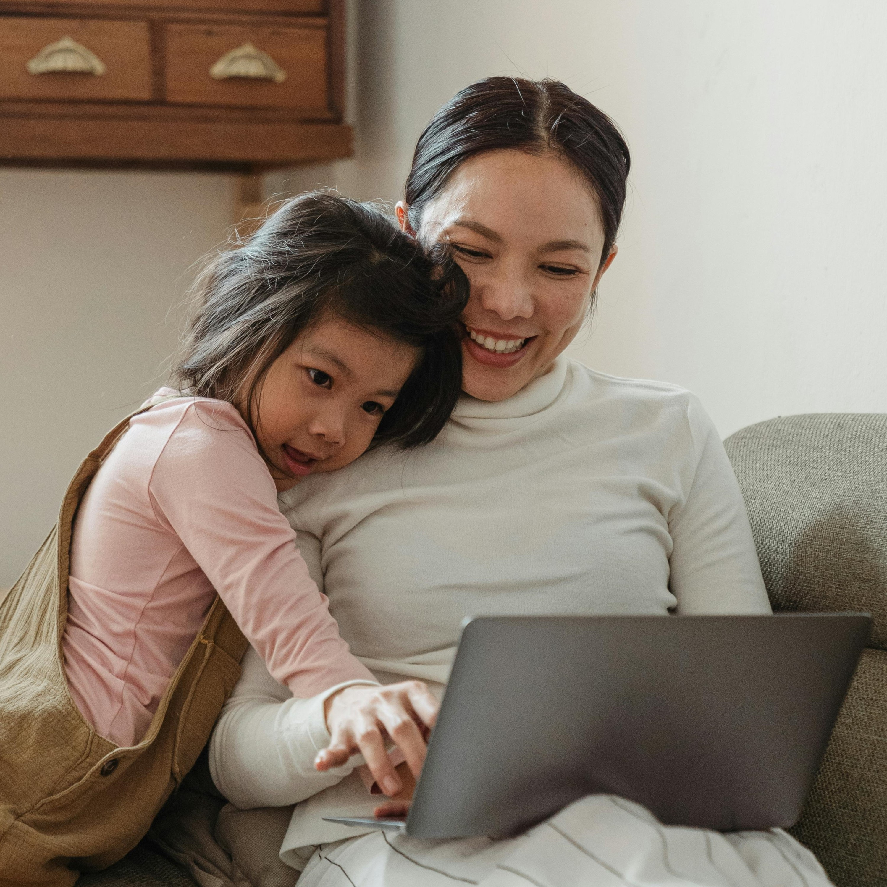

MetaMortis biedt een baanbrekende manier om in contact te blijven met uw dierbaren door middel van geavanceerde Virtual Reality (VR) en Brain-Computer Interface (BCI) technologieën. Dit innovatieve product stelt gebruikers in staat om de herinneringen, persoonlijkheden en levens van overleden geliefden digitaal te bewaren en te ervaren.

Het proces begint met het gebruik van een geavanceerd hersenscanningsapparaat dat de hersenactiviteiten en herinneringen van een individu opneemt. Deze data wordt verwerkt en geüpload naar de Meta-database, waar het veilig wordt opgeslagen. De gegevensscanning omvat het vastleggen van cognitieve patronen, herinneringen, stemgeluid, en persoonlijkheidskenmerken om een digitale representatie van de persoon te creëren.

De gescande data wordt opgeslagen op speciaal ontworpen geheugensticks. Deze sticks kunnen eenvoudig in de MetaMortis VR-headset worden geplaatst, waardoor gebruikers toegang krijgen tot de opgeslagen herinneringen en persoonlijkheden. Elke geheugenstick kan unieke gegevens bevatten, zodat meerdere personen en herinneringen afzonderlijk kunnen worden opgeslagen en opgeroepen.
Met behulp van de VR-hardware van Meta kunnen gebruikers in een volledig meeslepende virtuele omgeving communiceren met digitale versies van hun dierbaren. Deze avatars reageren real-time op interacties en kunnen gesprekken voeren, emoties tonen en zelfs persoonlijke verhalen vertellen. De VR-omgeving is ontworpen om levensecht te zijn, met hoogwaardige grafische weergaven en geluidskwaliteit die bijdragen aan een authentieke ervaring.
MetaMortis biedt rouwende personen de mogelijkheid om hun geliefden virtueel te bezoeken, wat kan helpen bij het verwerken van verlies en verdriet. Het opnieuw beleven van herinneringen en het voeren van gesprekken kan emotionele troost en steun bieden.

Educatieve instellingen kunnen MetaMortis gebruiken om studenten te onderwijzen over historische figuren en gebeurtenissen. Door interactie met digitale avatars van historische personen kunnen studenten een diepere en meer betrokken leerervaring opdoen. Musea en culturele instellingen kunnen MetaMortis toepassen om het erfgoed van beroemde denkers, kunstenaars en leiders te bewaren en te presenteren.
MetaMortis maakt het mogelijk voor families om hun geschiedenis en tradities digitaal te bewaren en te delen met toekomstige generaties. Dit kan bijdragen aan het behoud van familieverhalen en culturele praktijken die anders verloren zouden gaan. Gebruikers kunnen virtuele familiebijeenkomsten organiseren, waarbij ze kunnen communiceren met de avatars van hun voorouders en leren over hun erfgoed.
Therapeuten en geestelijke gezondheidszorgprofessionals kunnen MetaMortis gebruiken als een hulpmiddel voor therapie en counseling. Door virtuele interacties met digitale avatars kunnen patiënten nieuwe inzichten en emotionele verlichting vinden. MetaMortis kan ook worden gebruikt in rehabilitatieprogramma's om cognitieve en emotionele functies te verbeteren.
"MetaMortis has made it possible for me to learn Gaelic the way it was taught to my ancestors in 2024, right before the language became endangered. Now we can talk with our deceased from that time to revive the Gaelic language and culture."
- Esma Weatherwax
"Met MetaMortis heb ik de verhalen en liederen van mijn Somalische grootmoeder kunnen vastleggen en bewaren. Nu kunnen mijn kinderen en kleinkinderen, zelfs als ze opgroeien in het Westen, haar stem horen en onze culturele tradities leren kennen. Dit helpt ons om onze unieke identiteit te behouden in een wereld die steeds meer uniform wordt."
- Rajesh Patel

"Met MetaMortis kunnen onze leerlingen rechtstreeks communiceren met digitale versies van historische figuren. Dit heeft hun begrip en waardering voor onze cultuur en geschiedenis enorm verdiept."
- Elena Rossi
"Met MetaMortis heb ik de kans gekregen om de geschiedenis en legendes van mijn Koreaanse familie te digitaliseren. Mijn opa vertelde altijd prachtige verhalen over onze voorouders en hun avonturen. Nu heb ik zijn verhalen kunnen vastleggen in een digitale vorm, compleet met zijn stem en expressies. Mijn kinderen kunnen nu direct met zijn avatar communiceren en deze verhalen beleven alsof hij ze zelf vertelt. Dit helpt ons om onze culturele wortels te behouden, zelfs als we in een multiculturele samenleving leven."
- Hana Kim